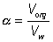

|
|
Equilibria in biphasic aqueous-organic systems
B"> [7.1] If this reaction is carried out in a biphasic system consisting of a mixture of an aqueous and an organic solvent, both A and B will be partitioned between the two solvents (with partition coefficients, PA and PB) and a separate equilibrium (Korg) will be established between A and B in the organic phase. aqueous B; organic A <--Korg--> organic B; aqueous A <--PA-> organic A; aqueous B <--PB--> organic B" width="257" height="157"> [7.2] where: Because of the cyclic nature of these equilibria only three of these parameters are independent 'variables' (i.e., Korg depends on Kw, PA and PB). It should be noticed from the following discussion that Korg plays no further part, although similar derivations could be made involving Korg, PA and PB rather than Kw, PA and PB. The apparent equilibrium constant (Kbiphasic) of this system may be defined as where the subscripts t, org and w refer to the total solution, the organic and water phases respectively. If V represents the volumes involved, it follows that (7.9) Substituting from equations 7.7 and 7.8 into equation 7.6, (7.10) (7.11) Substituting the partition coefficients from equations 7.3 and 7.4 gives the simplified relationship, i.e., a is the ratio of the volumes of the organic and water phases.  (7.13) The apparent equilibrium constant (Kbiphasic) varies with the relative volumes of the aqueous and organic phases; increasing when the substrate is partitioned more efficiently out of the organic phase and into the aqueous phase relative to the behaviour of the product (i.e., PA < PB), and decreasing when the reverse occurs (Figure 7.3A). If there are sufficient differences in the partition coefficients and both substrate and product are relatively non-polar then substantial shifts in the equilibria occur even at high relative water contents. A substantial increase in the apparent equilibrium constant may be achieved, when both the substrate and product have partition coefficients less than unity, when the ratio of the partition coefficients is suitable (Figure 7.3B). Clearly if a is very small Kbiphasic tends to Kw, the equilibrium constant in aqueous solution. However, if a is sufficiently large, equation 7.12 simplifies to (7.14) Therefore, substituting from equations 7.2 - 7.5, (7.15) Therefore Kbiphasic tends to Korg, the equilibrium constant of the reaction in the pure organic liquid. Figure
7.3. The variation in the apparent equilibrium constants of a
one-substrate one-product reaction (A Many reactions are bimolecular, and these are influenced in a more complex way by the biphasic system. The processes may be represented in a manner similar to that used for monomolecular reactions; Using similar reasoning to that outlined above, the following expression may be obtained for the apparent equilibrium constantes As in the case of monomolecular reactions, when the relative water content is very low (i.e., a is high) the apparent equilibrium constant tends to Korg. However, the equation (7.16) is quadratic in terms of a and at intermediate values may produce a maximum or minimum value for the apparent equilibrium constant that is several decades different from either Kw or Korg (i.e., the apparent equilibrium constant may be greater than the equilibrium constant of the same reaction in either of the pure phases, see Figure 7.4). Under some circumstances this may enable the reaction productivity in the biphasic system to be much greater than that attainable in either pure phase. Figure 7.4. The
variation in the apparent equilibrium constants of a two-substrate two-product
reaction (A + B A special and relevant case of the bimolecular reaction scheme is where one of the reactants is water (e.g., use of the hydrolases). These reactions may be written in a way corresponding to reaction scheme [7.3]. The normal direction for the reaction in aqueous solution is the hydrolytic process from right to left. However, the apparent equilibrium constant may be shifted in biphasic solutions, as outlined above, and allow the hydrolase to act in a synthetic (i.e., left to right in reaction scheme [7.4]), rather than hydrolytic, manner. Such reactions significantly extend the processes available to the enzyme technologist, as synthetic reactions are generally much more difficult to achieve by classical organic chemistry than hydrolytic reactions, particularly when a regiospecificity is required as, then, there is a choice of reactive groups in the substrates. Two factors affect the yield of the product (C) in such reactions: (1) the shift in apparent equilibrium constant (Kbiphasic); and (2) the concentration of water ([(H2O)t]), as one of the participating reactants. [(H2O)t] may be obtained from the material balance, (7.17) where [(H2O)w] is the molar concentration of pure water (= 1000/18 = 55.5 M). Substituting Pw for [(H2O)org]/[(H2O)w],
(7.19) Substituting for Kbiphasic from equation 7.16 (with PD set to equal Pw) and rearranging, the terms in (1 + aPw) cancel to give (7.20) This represents a fairly complex relationship but a few generalisations may be made. If the product (C) is less polar than either reactant (A or B) then the yield generally increases with the relative concentration of the organic phase (a) to reach a plateau. If the reverse occurs, then there will be a plateau at low yield and high a in the a-yield diagram. Both minima and maxima may occur, dependent on the parameters. Figure 7.5 shows the variation of the apparent equilibrium constant and the yield for the enzymic synthesis of an ester from its acid and alcohol in a biphasic system. From this it can be seen that the use of a biphasic system can increase the yield of such reactions from zero to nearly 100%. In order to achieve high conversions, the water produced must be removed from the two-phase system. If it is not removed, there is a continual drop in a which reduces the extent of the favourable equilibrium. There are no simple ways in which this water may be removed but reactors which allow the constant addition of fresh catalyst and organic phase reduce the size of the problem. Figure 7.5. The
variation in the apparent equilibrium constant and percentage yield of a reverse
hydrolytic reaction (A + B Use of biphasic solvent systems also affect the ionisation of acid and basic groups. Consider the ionisation of an acid HA, where only the unionised form is soluble in the organic phase and the ionic species are only soluble in the aqueous phase, [7.5]
The hydrogen ion concentration, as determined, is characteristic of the aqueous phase, A consideration of material mass balances for A− and HA gives Substituting for pH from equation 7.22 into equation 7.23 gives Ka,w + log10(([HAt]/[At-]) x ([Aw-]/[HAw]))" width="309" height="53"> (7.26) Substituting from equations 7.24 and 7.25 this simplifies to give Ka,w + log10(1+alphaPHA)" width="245" height="25"> (7.27) Similarly, for the protonation of a base Ka,w - log10(1+alphaPBase)" width="255" height="25"> (7.28) A qualitative assessment of reaction schemes [7.5] and [7.6] shows that increasing the partition coefficient for the uncharged acid or base will pull the reaction away from the formation of the ionised species. It follows from equations 7.27 and 7.28 that the apparent pKas of acids increase in biphasic systems whereas those of bases decrease. These changes may well be several pH units, dependent on the partition coefficients and the relative fraction of organic solvent present. The shifts in pKa are in addition to any increase in the pKa due to the lower dielectric constant of the aqueous phase, as outlined in Chapter 1. This is likely to be particularly relevant under almost anhydrous conditions (i.e., where a is high) which tend to 'freeze' the hydrogen ions lowering their activity. The utility of the shift in the pKa can be shown using ester synthesis catalysed by a-chymotrypsin as an example. where RCOOH and RCOO− represent the un-ionised and ionised forms of N-benzoyl-L-phenylalanine, RCOOR' represents N-benzoyl-L-phenylalanine ethyl ester and R'OH represents ethyl alcohol.Although the non-ionic reaction in aqueous solution is evenly balanced (Knonionic,w = 7), the overall reaction proceeds towards the left, in water at neutral pH, due to the pull exerted by the acid's ionisation (pKa = 3.4). In biphasic chloroform-water solution (a = 20, PHA = 100), the Ka shifts by three decades to give a pKa close to 7. This, together with a shift in the equilibrium constant due to the partition effects, outlined earlier, produces an overall shift in the equilibrium constant of about five decades at the optimal pH (7.5) of the enzyme (Figure 7.6). Use of the biphasic system allows reactions to be performed at a pH that is both thermodynamically favourable to the reaction direction required and at the optimum for the enzyme's catalytic efficiency. Figure 7.6. pH dependence of the apparent equilibrium constant for the synthesis of N-benzoyl-L-phenylalanine ethyl ester, as given by the reaction scheme [7.7]. ——— reaction in aqueous solution only (i.e., a = 0); ---------- reaction in a biphasic chloroform-water system (a = 20). The shift upwards is due to the more significant partition of the ester into the organic phase relative to the reactants, whereas the shift in the pH dependence to higher pH is due to the change in the apparent pKa of the acid.
This page was established in 2004 and last updated by Martin
Chaplin |